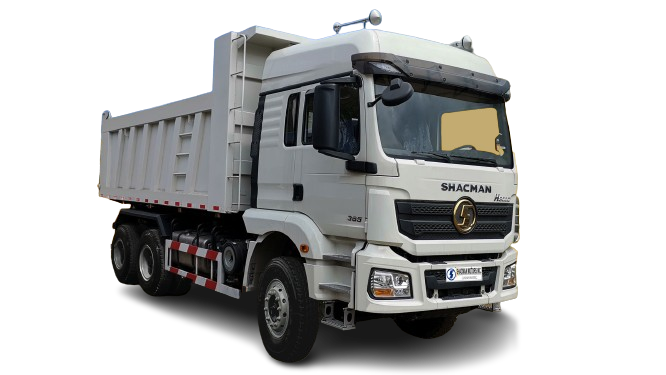
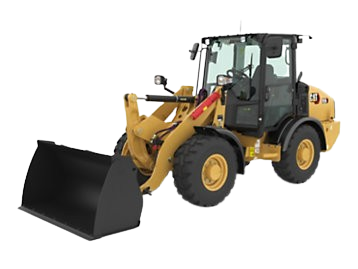
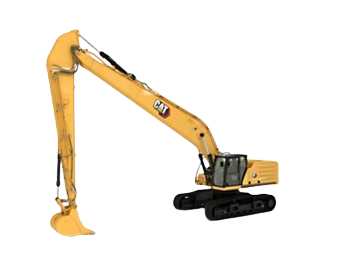
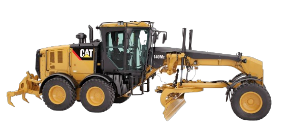
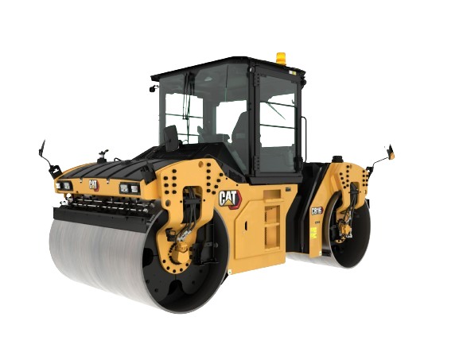

Common Equipment Used in Surface Mining | Mechanical Extraction
1. Dump Trucks (DTs)
Image Source: https://shacmanmotors.ph/dump-trucks
Dump trucks or DTs in surface mining operations are used in facilitating the transportation of large quantities of materials, such as overburden, ore, or other extracted materials, within the mining site.
2. Loader
Image Source: https://www.cat.com/en_US/products/new/equipment/wheel-loaders.html
Its main use is to scoop and lift large volume of topsoil, overburden, ore or extracted materials off the mining face into waiting haul trucks. The loader, which is equipped with a flexible bucket at the front, enables the rapid transfer of materials, which contributes significantly to the total productivity of surface mining operations.

Excavators are equipped with a bucket at the end of a hydraulic arm. The equipment able to efficiently dig, scoop, and load large quantities of material onto haul trucks. In surface mining, excavators are instrumental in creating and maintaining pit configurations, exposing mineral resources for extraction. Their adaptability and mobility enable precise digging in various terrains, making them indispensable for tasks such as bench preparation, slope shaping, and selective mining of ore bodies.
4. Long Reach Excavator
Image Source: https://rb.gy/tc0g0r
Long reach excavators are used to excavate materials from locations that are beyond the reach of conventional excavators. Equipped with an extended arm and boom, the long reach excavator allows reaching over obstacles, working on slopes, or accessing materials in deep pits. Its extended reach allows for the excavation of overburden, minerals, or other materials without the need to relocate the machine frequently. Long reach excavators are also highly useful in desilting process of siltation ponds. The extended arm allows operators to scoop and remove sediment with accuracy, minimizing the risk of disturbing the pond's structural integrity.

A hydraulic breaker, commonly known as a rock breaker or hammer, serves a fundamental role in surface mining by providing an efficient means of breaking and fragmenting hard rocks and oversized boulders. Hydraulic breakers use a high-pressure hydraulic system to deliver repetitive blows to the rock surface, effectively breaking it into smaller, more manageable pieces. In surface mining, where the extraction of minerals often involves encountering hard rock formations, the hydraulic breaker is effectively useful for tasks such as quarrying, trenching, and ore fragmentation. Its ability to selectively break and dislodge rocks enhances the operational productivity of excavation and loading processes of which allows for easier handling and transportation of materials.
6. Grader
Image Source: https://rb.gy/wjozru
In surface mining, a road grader, also known as a motor grader usually in use for haulage roadworks and maintenance. This heavy-duty machine is fundamental in road scraping, shaping, and maintaining haul roads within the mining site. It is crucial for achieving smooth, well-compacted surface on haul roads, which are essential for the safe and efficient movement of heavy equipment, including trucks and loaders. Road graders use a large, adjustable blade positioned between the front and rear axles to cut, spread, and level the earth. Additionally, road graders ensure that haul roads have the necessary incline and curvature for efficient water drainage, preventing erosion and enhancing overall stability.
7. Road Roller
Image Source: https://rb.gy/6txvtm
Road rollers in surface mining are critically important for road surfacing and matting. Once materials, such as gravel, or crushed rock, are placed on the ground for construction or as part of mining operations, the road roller is employed to compact and compress these materials. The compacted roads enhance the load-bearing capacity of the surface thus, provides stability for heavy machinery, vehicles, and equipment that traverse the area.
8. Water Truck

Image Source: https://amthorinternational.com/our-quality-tankers/water-tanker-trucks/
Water trucks are use in surface mining for dust suppression. These specialized vehicles are equipped with large water tanks and spray systems designed to mitigate the generation of dust during mining operations. Dust suppression is crucial in maintaining a safe and healthy working environment for mining personnel and minimizing environmental impact. By applying water to haul roads, stockpiles, and other areas prone to dust generation, water trucks help to control airborne particles, improving visibility and air quality.